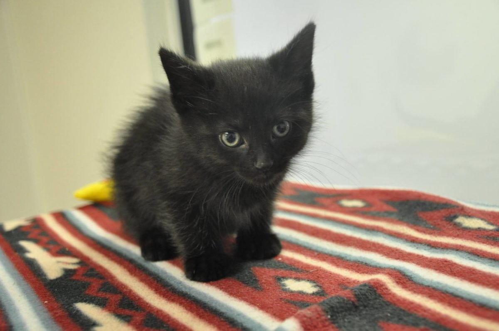

my favorite animals 😊
- tigers
- bears
- snakes
- koala bears
- dogs
| Firstname | Lastname | Age |
|---|---|---|
| Sydney | lai | 10 |
| Sumair | singh | 10 |
| Alex | Koppel | 17 |
| Jennie | Kim | 21 |
hi, my name is Sydney Lai, this website includes my top three favorite pets and my favorite youtubers. this also includes some people names, last names and their age.
my favorite pet is a kitten because they are cute and fuzzy. they can also come in different colors like black and orange.
They can be small and big and can cuddle with you at night.



| Firstname | Lastname | Age |
|---|---|---|
| Sydney | lai | 10 |
| Sumair | singh | 10 |
| Alex | Koppel | 17 |
| Jennie | Kim | 21 |